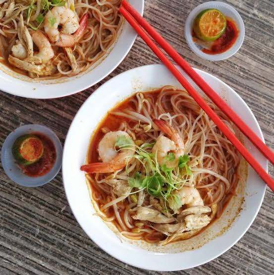

Sarawak Laksa is a legendary Malaysian noodle soup defined by its complex, aromatic, and deeply savory broth, famously described by the late chef Anthony Bourdain as the "Breakfast of the Gods."
Unlike other regional laksas, it is neither a heavy coconut curry soup nor a tart, fish-based sour broth. Instead, it strikes a perfect, delicate balance between the two, featuring a reddish-brown soup built from a paste of over 20 blended aromatics and spices (like lemongrass, galangal, coriander, and cumin), combined with a rich prawn stock and creamy coconut milk.